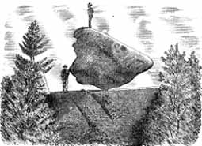

An incalculable number of boulders were left in the wake of great shields of ice
retreating northward during the last glacial epoch. A great number of these
came to rest on bedrock surfaces as 'perched' boulders. Some of these are
"foreigners" in the sense that they are a different bedrock unit than the native
rock on which they lay. However, some came to rest in positions of a more
precarious nature that caught the eye and imagination of early inhabitants from
the Native Americans down to more modern day colonial settlers. Even before
glacial theories became fact these rocks were oft times discussed amongst early
geologists such as Amherst's Edward Hitchcock in his two treatises on
Massachusetts's geology from 1835 and 1841. Hitchcock mused about the great
quantities of water necessary to move such large rocks and wrote, "bowlders are
by far the most instructive index of diluvial agency in Massachusetts."
The six sites discussed represent what I arbitrarily feel show the more
exemplary examples of these features. Size, minimum point of contact, and how
the rock might be tipped are the considerations I used in rocks that demonstrate
the effect/illusion of being balanced. Indeed, early histories record these
rocks as being capable of some limited movement thus gaining names such as
Tipping Rock, Rolling Rock, Teetering Rock, etc. In almost all the cases I have
personally observed, no movement was possible in the present time.
Additionally, I have a couple of examples of 'doublets' or boulders upon a
boulder that represent their own unique form of a balancing act.
Balance Rock, Lanesborough
If one were to try and select one example for its characteristics and fame as a rock, it would be Lanesborough's Balance Rock. This 165-ton boulder sits on a relatively small point of rock that is said to be the tip of another, already deposited and buried, erratic. Indeed, Balance Rock is only one of many erratics deposited in this section of forest that was pastureland up until the middle part of the 1900s. Indian legends explain the occurrence of the boulders as a game of quoits and local history tells of a band of gypsies moving in on the field of the former farmer owner and charging admission to see the Rock. Although this boulder is oblong in nature, observing - or more especially photographing it from the end view, only serves to enhance the effect it is just barely sitting upon a very small point of rock.
Cradle Rock, Worcester County
Up in the northwest environs of Worcester County lies a rock, or more accurately two of them, whose prominence may equal that of the Lanesborough Balance Rock. Known variously as Tipping Rock, Rocking Stone, and sometimes better known as Cradle Rock, this double set of boulders does actually sit quite close to the edge of a ledge of bedrock. Native Americans were familiar with the site as well as countless others including preeminent Massachusetts geologist Edward Hitchcock from the 1800s and glacial geologist William Alden from the early 1900s. It said that years ago a previous owner/farmer, tiring of trespassers, affixed the two boulders so they would not rock anymore. Another version of the story shows a more compassionate farmer by relating the story that the boulders were fixed so they would not fall off the ledge.
Rolling Rock, Fall River
Fall River's Rolling Rock, on the other hand, sits right in a section of urban
sprawl. This rock was preserved by the City in 1930 culminating a 25 year
battle to decide it's fate. It's estimated weight is 140 tons and can
considered a 'true' erratic in that it is a conglomerate boulder (most likely
from the Dighton area) sitting upon a base rock of granite. Native Americans
were said to exact punishment from guilty parties by 'rolling' the rock upon the
victims' limbs that had been placed underneath the edges. As early as the
1840s, geologist Hitchcock expressed concerned that a nearby quarry might lead
to the ultimate demise of Rolling Rock. But by the 1860s the quarry foreman
brought stability to the rock by shimming it up and preventing further motion.
Balance Rock, Wachusetts Mt.
Balance Rock on the northern slopes of Wachusetts Mountain is another fine
example of a double boulder formation. Resting on a gently sloping bedrock
surface, it is easily accessible from (what else?) the Balanced Rock Trail. In
olden days when summit houses, offering rooms and amenities, use to grace the
mountain's top one brochure describes "Double Boulder" as "a curiosity of nature
located on the northerly slopes of the Mountain, on the line of the old Indian
Trail. It consists of two immense boulders having one upon the other, the upper
one so firmly placed in position as to be immovable, they are each about six
feet in diameter and together weigh in the vicinity of thirty tons."

Balance Rock, Worcester County
On private land in the suburbs of Worcester lies a Balance Rock with a little
bit of an unusual nature: The fulcrum - or pivot point - in the "balancing act"
lies on the boulder itself. Lying high upon an elevated exposure of bedrock,
its very slight movement was demonstrated by the landowner himself. Several
more historical names for this rock edifice were Dog's Head and the Old Poet.


{kind=link}
{kind=link}
{kind=link}
{kind=link}
{kind=link}
{kind=link}
{kind=link}
{kind=link}
{kind=link}
Balance Rock, Worcester County
Further out of Worcester, on the border with Middlesex County, lies a
rock that captures the essence of all that makes for a good balanced rock. This
oblong boulder lies across the edge of a small outcrop of rock that makes for a
small ledge. Not only this, but it is tipped in what one might call a very
"insecure" position looking as if it might want to fall. But as one local law
enforcement officer told me, stories abound concerning this rock including
attempts by local school children to push it off its pedestal. Indeed,
Hitchcock describes it as "a bowlder of granite, 17 feet long and 27 feet in
circumference, resting upon granite or gneiss: apparently just ready to fall,
and yet five men with levers were unable to throw it from its base."
{kind=link}
{kind=link}
Certainly the discussion of Balanced Rocks might be carried on for some
time but I am going to conclude it with an entry into the "honorable mention"
category. At East
Rock in Great Barrington lays a double boulder formation that seems to have
received little recognition outside of its own local area and history. As late
as the early 1900s it was written "you can tip it back and forth by one
finger." Whether movement in East Rock is still possible, I will leave up to
some very strong-armed future explorer to discover.